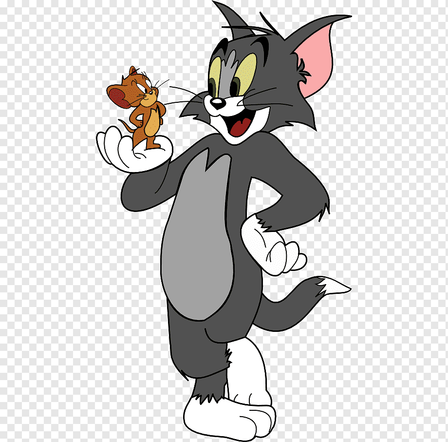

About Tom Cat
Tom Cat is constantly trying to catch Jerry Mouse. He can never catch him though. He is just always outwitted by Jerry.
Tom and Jerry
- He is a cat.
- He isn't very smart.
- He can't catch Jerry.
Tom's Ideas
Tom has the worst ideas. Click on the links below to read more about them!